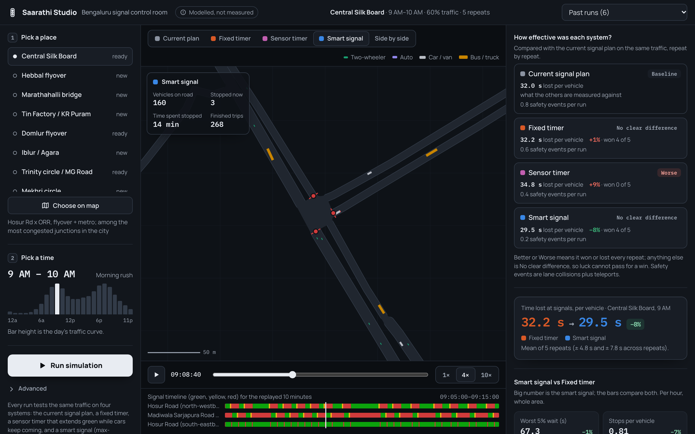
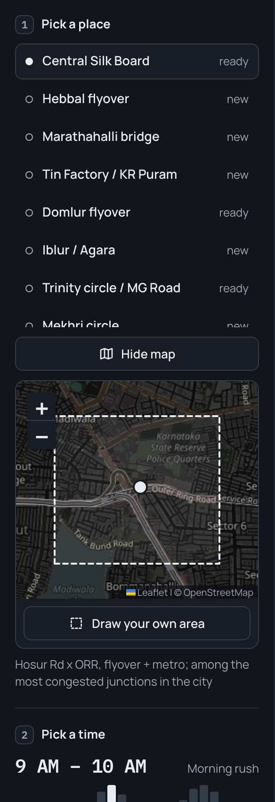
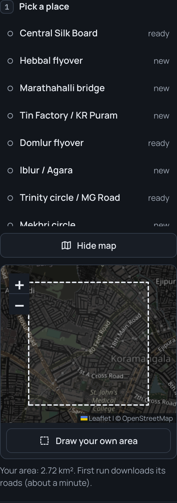
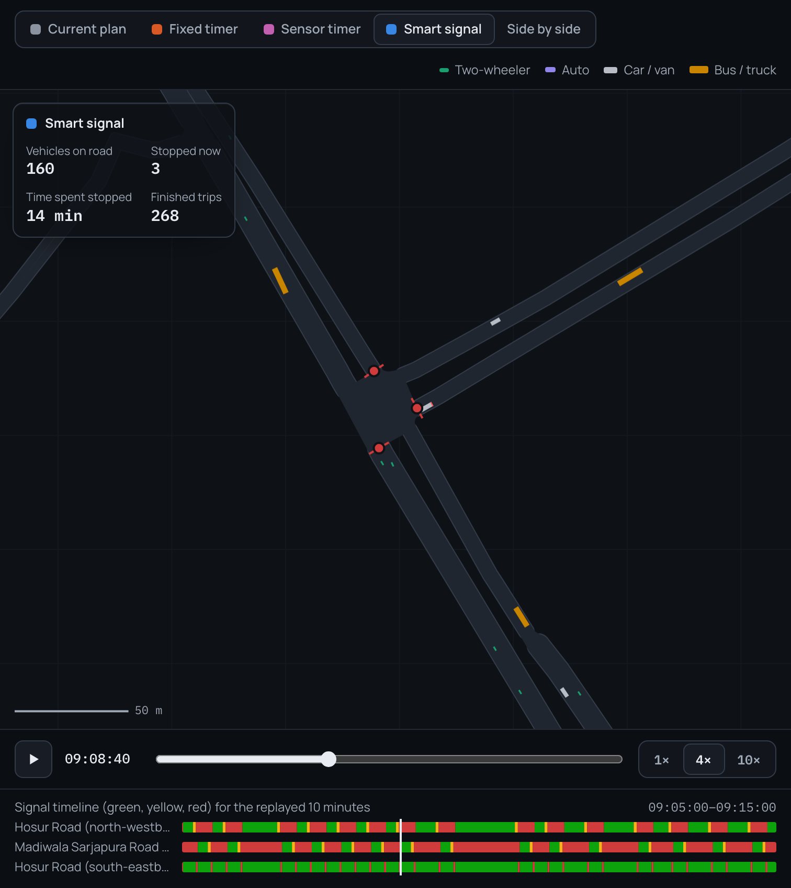
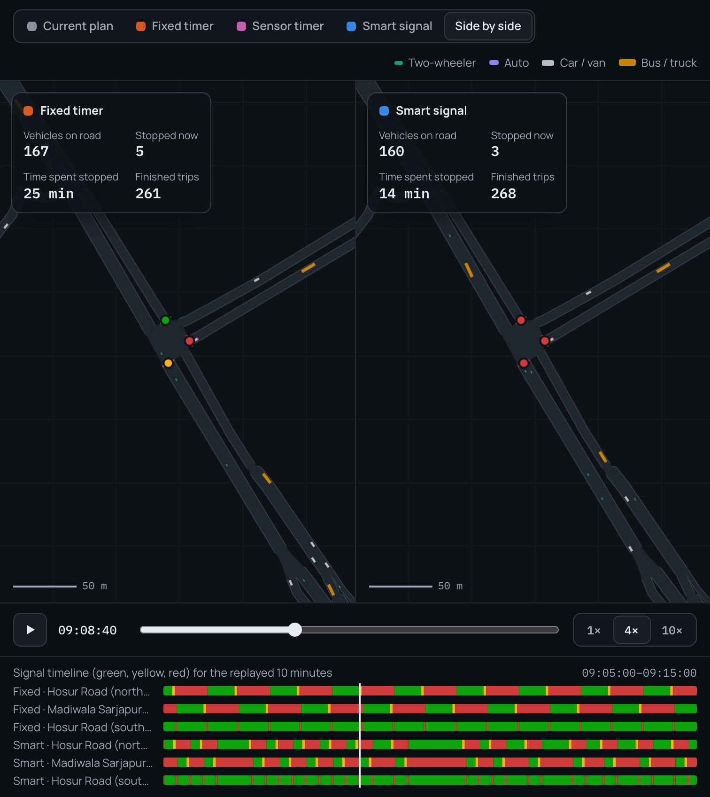
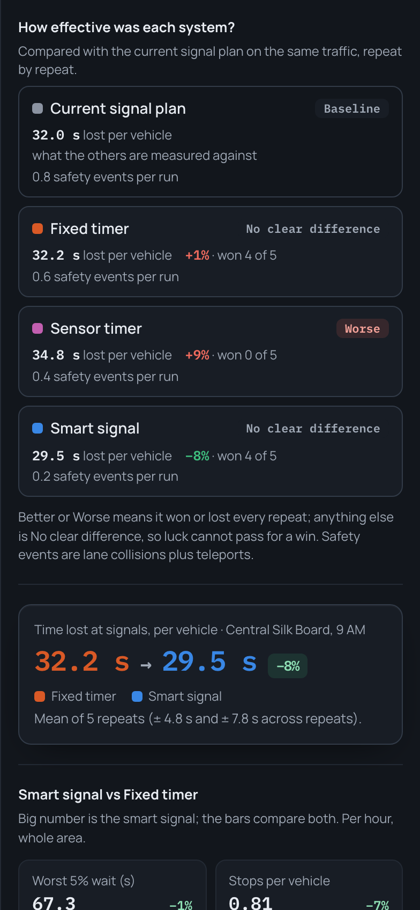

A traffic-signal test bench for Bengaluru junctions. Pick a junction and an hour, and it simulates the mixed traffic there. It then compares four ways of running the signals on identical traffic and tells you, honestly, which one helped.
Modelled, not measured: the traffic is simulated, not counted on the street
| Name on screen | What it does | Technical name |
|---|---|---|
| Current plan | The signal timings stored for that junction. This is the baseline everything is compared with. | program |
| Fixed timer | Same green times every cycle, whatever the traffic. | fixed-time |
| Sensor timer | Extends a green while cars keep arriving at a detector. | actuated |
| Smart signal | Gives green to whichever direction has the most waiting traffic (weighted by vehicle size). | max-pressure |
cd "Saarathi/code" export PATH="$PWD/.venv/bin:$PATH" python studio.py # then open http://127.0.0.1:8765 in a browser


The centre replays minutes 5–15 of the first repeat. Every dot is a vehicle, coloured by type: two-wheeler, auto, car/van, bus/truck. The circles at the junction are the signal heads (green, yellow or red).


| Control | What it does |
|---|---|
| Top buttons | Switch between the four systems, or Side by side. |
| Play button / Space key | Play or pause. |
| Slider | Jump to any second of the 10 minutes. |
| 1× · 4× · 10× | Playback speed. |
| Mouse drag / scroll | Pan and zoom the map. The 50 m bar shows the scale. |
| Signal timeline (bottom) | Green, yellow and red for each road approach over the 10 minutes. The white line is "now". |

Each card shows:
| System | s lost | vs plan | won | Verdict |
|---|---|---|---|---|
| Current plan | 32.0 | — | — | Baseline |
| Fixed timer | 32.2 | +1% | 4 / 5 | No clear difference |
| Sensor timer | 34.8 | +9% | 0 / 5 | Worse |
| Smart signal | 29.5 | −8% | 4 / 5 | No clear difference |
The smart signal is 8% faster on average but lost one repeat, so the honest verdict is No clear difference, not Better.
Further down: Fixed vs Smart in detail (worst 5% of waits, stops, trip time, fuel, CO₂), simulation checks, queue charts, longest queues by road, delay by vehicle type, every repeat, and All numbers with a CSV download.
step() method, run against the same four systems.run.py … --gui).In one sentence: real Bengaluru road maps + Indian traffic rules of thumb → a traffic simulator (SUMO) → four signal controllers on identical traffic → a fair comparison shown in a web page.
scenarios/make_area.py downloads any area of up to 4 km² from OpenStreetMap. Signals are named after their streets.netconvert turns the map into a simulation network. It drives on the left and uses SUMO's sublane model (0.4 m strips), so two-wheelers can squeeze between cars and filter to the front at a red light, as in Indian traffic.demand.py generates vehicles using the Bengaluru 2022 vehicle mix (Basu et al.) and IRC:106 "PCU" sizes (a bus counts as several cars). A 24-hour busyness curve sets the volume for the chosen hour.runner.py runs SUMO 1.27 and controls the lights live through TraCI, SUMO's remote-control interface. Each controller's decision passes through a SafetyShell that enforces minimum green, yellow and all-red times, so no controller can make an unsafe switch. Each system runs on the same 5 random seeds (identical traffic), which makes the comparison fair.studio.py is a small web server written only with Python's standard library. The page is one HTML file that draws the traffic on a canvas, with a Leaflet map for picking places.An automated end-to-end script, code/e2e_studio.py, hits every server endpoint and feature many times. Separate browser tests then clicked through every control on the page.
| What was tested | Checks | Passed |
|---|---|---|
| Unit tests | 1 suite | all |
| Server API: every endpoint, bad inputs, wrong types | 455 | 455 |
| Page loads and assets | 50 | 50 |
| Uploading your own controller (valid, broken, malicious) | 122 | 122 |
| Browser: Space key, map toggle, drawing areas, back to preset | 170+ | all |
| Browser: full run from the page; phone-width (375 px) layout | 2 | 2 |
| Real simulations: every built place × every hour × 2 traffic levels | 141 | 141 |
| Same input gives the same answer; fresh road-network builds | 490 | all |
Bugs the tests found, all fixed: bad input crashed the server (it now replies with a clear error); a broken request body dropped the connection; temporary files showed up in Past runs; the screen went blank when switching view while paused; and the signal-timeline "now" line was stuck at the left edge.
docs/assumptions.md, not field counts.| "What is it?" | A simulator that tests traffic-signal strategies on real Bengaluru junctions with Indian mixed, lane-less traffic, and reports fairly which one helps. |
| "Why four systems?" | The current plan is the baseline. Fixed and sensor timers are what cities use today. Max-pressure is a well-known adaptive method. Our own controllers must beat all of them. |
| "How do you know it isn't luck?" | Every system runs on the same 5 random traffic days. It is only called Better if it wins all 5, and safety events are always reported. |
| "What's Indian about it?" | Left-hand driving, lane-less sublane movement (two-wheelers filter to the front), the Bengaluru vehicle mix, and IRC PCU values. |
| "What's missing?" | Field calibration. Demand and behaviour are provisional, so we say "modelled, not measured". |